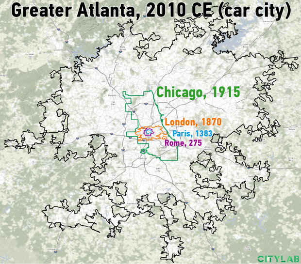
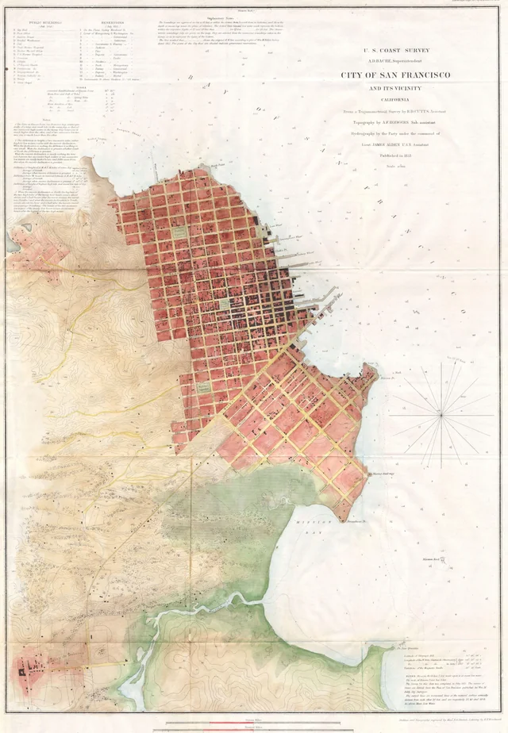

Collapsing the Isochrone
The Tyranny of Marchetti
This is an isochrone map of San Francisco. The space between the center point (my front door11EDIT: Now my former front door. Goodbye Moss street, I won’t particularly miss you. For anyone young, impressionable, and looking for a summer airbnb, please don’t live here.) and any other point on the map corresponds to the travel time between them. When I walk out in the morning, this is the map I have in my head when I think “how long will it take to commute today?”
I made this map because I couldn’t care less about the physical distance between two points in San Francisco. There’s all sorts of places I’d like to go all over the city. Some are in convenient locations. Others are in the Presidio.22Dear everyone with an office in the Presidio, please know that the rest of us hate you. Sincerely, everyone who lives in a normal part of town and has to catch a 30 minute Uber to come visit. Either way, their distance from each other is only one factor in what I actually care about: how long it will take me to get there.
This is because I, just like all of us, measure my day in terms of time and not in terms of physical distance. Time serves as an effective numeraire33https://en.wikipedia.org/wiki/Num%C3%A9raire. of my life. It is the one denominator common to both commuting and getting coffee and a phone call with my mother.
More importantly, time is one of my scarcest resources. I only get 24 hours of it each day. I can’t save it, buy it, or manufacture more of it.44Or, as Peter Drucker put it in The Effective Executive (1967): “One cannot buy, rent or hire more time. The supply of time is totally inelastic. No matter how high the demand, the supply will not go up. There is no price for it. Time is totally perishable and cannot be stored. Yesterday’s time is gone forever, and will never come back. Time is always in short supply. There is no substitute for time. Everything requires time. All work takes place in, and uses up time. Yet most people take for granted this unique, irreplaceable and necessary resource.” If I waste it, it’s gone forever. Generally, that means I want to carefully spend it on things I like doing, and avoid spending it on things I don’t.
Unfortunately for me, many of the things I like doing aren’t co-located. I like to get coffee at the Sightglass55I recommend their vanilla ice cold coffee. It’s worth the $7, I promise. near my house, after which I head down to the Mission to my favorite co-working space. The commute between the two is approximately 15 minutes each way. That means that every day I spend at least 30 minutes commuting instead of doing anything else.
I have to pay a similar tax on my time every time I go anywhere. Moving myself from place to place requires time, which directly takes away from the amount of time I spend on things I actually like to do. I therefore have to make a decision: how much time am I willing to pay?
There’s actually a consistent answer to this question. City dwellers throughout recorded history have all ended up deciding to spend (on average) one hour a day commuting. People in ancient cities used to spend an hour walking around. Today, we spend an hour sitting in our cars and buses. This one hour constant seems to be the empirically observed average of the amount of time humans are comfortable spending on commuting. It is called Marchetti’s Constant, named after the Italian physicist who first noticed the pattern.
This makes our isochrone all the more interesting. Go back and look at the line around the 30 minute mark. Anything inside of that line is somewhere that, by strong historical precedent, I’m likely to work, shop, or socialize. I am willing to pay the time-cost it takes to get there. Anything outside that line is too time-expensive to consider in my day to day. That 30 minute mark is my Marchetti frontier.
Anecdotally, my life matches up closely to this observation. I love wandering around San Francisco, and will frequently visit places all over. However, I only venture outside of this invisible line maybe once or twice a month, and do so exclusively on weekends. I am, by my own admission, a victim of Marchetti’s constant.
Most of the places I want to go and many of the things I want to do are within my frontier. I am privileged to live in a dense city and have access to a wide variety of goods. But I don’t have everything. Within my frontier, there are no mountains and there’s no good cifantuan.66Really good rice burritos, originally from the Shanghai region. I first had these near Whittier (in LA county) and have been chasing that high ever since. My entire family lives outside of my frontier. Most of my friends are also far outside.
So I go without.
The Beauty of Speed
Let’s say that I wasn’t satisfied with accepting the limits of my Marchetti frontier. There’s a lot of beautiful mountains across the world, and a lot of good cifantuan places. I would love to be able to visit all of them without paying an exorbitant time-cost. What are my options? Well, there are two: bring everything I care about inside my frontier’s current area, or expand the area my frontier covers to encompass everything I want.
A city is, by definition, a collective attempt at the former. Concentrating a large amount of people, goods, and services into one location has been humanity’s best method of making all of our frontiers overlap. The denser the city, the more people and things we can fit within it. We will continue to cram things in until at some point, we hit a density limit and congestion ruins the time we save by concentration. One of the many reasons I moved from the Midwest to the West Coast is because my frontier area here is so much cooler than my frontier area there. I am now within a thirty minute range of some of the brightest minds on earth, some of the most exciting companies in modern history, and a constant stream of events. It’s certainly an upgrade.
But it’s not enough. As mentioned, there are people and places and things that simply don’t exist within San Francisco. Some will never come here. My only recourse, then, is to take the second option of expanding the area my frontier covers. Considering I’m facing a fixed time budget and I can’t control geography, the only way to do so is to have the same amount of travel time correspond to a longer travel distance. In short, I need to increase my speed.
Now, you’ve probably noticed by now that the isochrone map is pulsing in and out every few seconds. I personally either walk, bike, or take public transport everywhere. During the day, when all the subway and bus lines are running, the city ‘shrinks’ as I can travel around at higher speed. At night, when all the lines are quiet,77except for transit along the OWL lines. OWL, you’re infrequent and slow, but I love you the city stretches outwards as I slow down to walking pace.
This is all to point out the obvious: we already use the trick of increasing our speed extensively in order to make our frontiers larger. Most of San Francisco lies outside of my frontier at night, but fits in snugly during the day. Collectively, the municipalities of the Bay Area spend around 350,000 megawatt-hours of energy and $3 billion of taxpayer money every year to accomplish this feat.88Energy: BART reports approximately 363,000 megawatt hours annually (bart.gov/node/38556). Money: BART’s FY26 operating budget alone is $1.2 billion (bart.gov/node/44131). SFMTA’s is $1.5 billion for FY25-26 (SFMTA deck).
This steep price isn’t an anomaly. The history of the city is intimately related to the history of speed. Humanity’s first cities, from the time of ancient Rome all the way into the industrial revolution, were only about an hour’s walk across.99Or to put it more bluntly, you could get to the central forum and temple from anywhere in the city in 30 minutes or less. Marchetti’s constant! It was incredibly difficult to fit a large population within them, and often this resulted in an urban density higher than most modern cities.1010https://pure.iiasa.ac.at/id/eprint/4071/1/RR-95-04.pdf It is only when we invented the steam engine that we see the expansion of city sizes. Since people could travel quickly on rail lines, their frontier expanded outwards towards the first suburban railway towns.1111https://en.wikipedia.org/wiki/Metro-land The frontier continued to move outwards as the car became popular and urban planners, especially in the United States, began to design the first car-centric cities.1212https://libraetd.lib.virginia.edu/public_view/2n49t1745. Cities were literally redesigned around cars. Partially due to automotive interests and lobbying in fact! Fascinating history.

It is safe to say then, that it isn’t that San Francisco happens to pay this immense price to make transit easy within the city. In fact, San Francisco happens to exist as a city because this price to increase our Marchetti frontiers is paid. Otherwise, it would still look something like it did before the train and the car arrived on the West Coast. Notice how, if you were to walk, this would be about an hour across:

We have spent the last 150 years redesigning our cities around faster and faster forms of travel. The great urban planners of the past have sought to make more places available within our Marchetti frontiers. They have done a spectacular job. And yet, my family is still thousands of miles away, and I don’t have my cifantuan or my mountain.
I obviously need to go faster. How fast can I really go?
On the Internet, Time and Space Died Yesterday
To answer this question, I would first draw your eye to this second map, this time an isochrone map of the internet. On it, I’ve catalogued every webpage and the time it takes to access it from my home WiFi network. I’ve left it at the same scale as the map of San Francisco.
Your eyes aren’t failing you. There is only one dot in the center, with no movement. It takes no more than a couple milliseconds to access content on the internet from my device.1313This is a somewhat gross assumption that skips an entire planet’s worth of infrastructure buildout for 6G and WiFi7. To be clear, this isn’t necessarily true for every internet user on earth, and for mega-downloads. It is, however, true for most of them, and will become true for the rest within a decade or two. It’s truly insane how fast our internet has become. Information streams through optical fiber at the speed of light. You can ‘go anywhere’ (or, to be more accurate, stream information to and from anywhere on planet earth) in a blink of an eye. In fact, it’s so fast that it feels downright bizarre to even realize that anything is moving at all. It simply feels instant.
On the internet, we have collapsed the isochrone.
It is little wonder why people consistently prefer to do things via the internet. You are milliseconds away from all of your friends. You are milliseconds away from your work. You are milliseconds away from your next great purchase. On the internet, you no longer have to pay a time-cost for “going” anywhere.
The only drawback is that our interactions with the modern internet are exclusively through audible and visual information. You can video call anyone on earth, but you can’t reach through the glass and pick up what’s on the other side.
This leaves us straddling two starkly different realities. Our eyes and ears exist at light speed. The rest of our bodies, on the other hand, are pitifully slow by comparison.
Bodies at the Speed of light
The technical hurdle before us, then, lies in speeding up the rest of our bodies. If we can engineer a way to see what’s going on at a point a thousand miles away, and hear what’s going on at point a thousand miles away, we should be able to smell, taste, feel, and touch that point too.
The reason we can’t yet do so lies in the way we send information over the web. We never send physical information in its natural analog form1414All of our senses measure analog information, at least in the macroscopic world that we live in. I wouldn’t dare opine on whatever is going on in quantum physics. directly. First, we capture this information and transduce it into a digital form, where it is represented by a set of binary digits. We then transmit network packets full of these bits to the target destination over the internet. Finally, we transduce it back into its original form to be sensed by the user.1515Of course, we can also manipulate the original information while it is being transferred in its digital form. The information transduced back to analog need not be strictly identical.
The reason that audio and visual information is so common is due to our command of their transduction. Microphones, cameras, keyboards, screens, and speakers are all very common. This makes capturing and displaying audio, video, and text very simple.
If we wish to collapse the isochrone for the rest of our bodies, we need to copy this pattern. We want to capture, transmit, and ‘display’ more of our sensations and motor functions. This will allow us to speed up the rest of our bodies to lightspeed.
There is already plenty of work being done for transduction of smell, taste, and touch. On a purely academic level, it is already possible to convert each of these senses into digital form and recreate them at another location.1616Taste: Chen et al., “A sensor-actuator–coupled gustatory interface…”, Science Advances 11(9), 2025, doi:10.1126/sciadv.adr4797
Smell: Osmo’s ‘scent teleportation’ https://www.osmo.ai/blog/update-scent-teleportation-we-did-it
Touch: Yu et al., “Skin-integrated wireless haptic interfaces for virtual and augmented reality,” Nature 575 (2019), doi:10.1038/s41586-019-1687-0. It will be years, and plenty of capital investment, before this work bears fruit on a consumer level. However, it is clear that it is within striking distance of our technical capabilities.
More importantly, it is already possible to replicate our body movements anywhere in the world. Alongside recent advances in robotics, there has been a proliferation of remote teleoperation systems. These systems allow a human user’s movements to be captured, transmitted, and then translated back into physical actions taken by a robot at a remote location. In effect, the user of one of these teleoperation systems can reach their hand through the internet and touch the other side.1717In fact, I’ve done it! It’s a very weird feeling.
Combined, these technologies unlock the ability to decouple your sensations and actions from your physical location. You will be able to see, hear, smell, taste, feel, and act on the world over the internet.
Unchained
Once our senses and actions can travel over the global net, we are free to simply flip between sets of sensors and actuators like web pages. Choose one set, and you feel exactly like you’re actually present at their location. Flip to another set that’s placed somewhere else and presto, you’ve “moved” your sensory experience and ability to act to a whole different location entirely. In effect, you can move yourself from place to place at the speed of light.1818This oversimplifies the complexity of a worldwide sensor buildout. Nonetheless, I think it is fundamentally correct.
And just like that, the isochrone of the physical world would begin to shrink. First, all of San Francisco would collapse towards the center. Then the rest of California. Then the rest of the world. Everything would fold itself into my thirty-minute frontier. At the speed of light, there is no ocean too wide, no mountain too high, no place too far.
And we will be free to roam the earth.